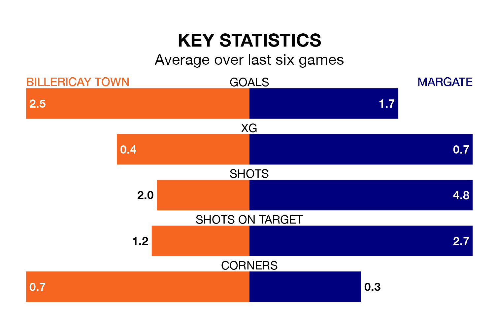

Struggling Margate face Billericay Town away at the AGP Arena on Saturday looking to build on a win in their last league outing.
After securing all three points with a 2-1 victory over Wingate and Finchley on April 20, Margate sit 19th in the Isthmian Premier Division.
They travel to play a Billericay side fifth in the standings, who also won their last match, 2-1 against Carshalton Athletic.
With 46 goals in 40 games so far this season, Margate are the league's third-lowest scorers with 1.1 goals per game. And they are conceding more than average, letting in 75 goals at a rate of 1.9 per game.
Billericay, meanwhile, are above average scorers, with 1.8 goals per game, compared to a league average of 1.6. They have conceded 1.2 goals per game.
In the last 10 years, Billericay and Margate have played each other on eight occasions. Billericay won five of them, Margate one, and they drew twice.
On average, Billericay scored 2.0 goals and Margate 1.4 in those matches.
Their last meeting was on November 25, when Billericay won 3-1 away.
Town are in fantastic form in the Isthmian Premier Division, with five wins and one loss from their last six games.
With three wins and two draws over that period, the visitors' form is worse – they have taken 11 points from 18, compared to the home team's 15.
Updated: 07:59 (UTC), 26/04/24